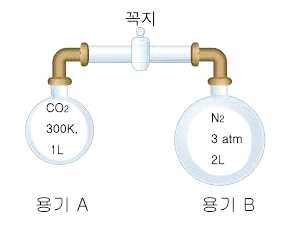

문제 5
단계 1
드라이아이스(\(\text{CO}_2\)), 얼음(\(\text{H}_2\text{O}\)), 소금결정(\(\text{NaCl}\))이 대기압에서 고체 상태로 존재하고 있다. 녹는 점을 비교하여 녹는 점이 낮은 물질부터 나열하시오. 나열한 이유를 각 물질에 주로 작용하는 분자간 힘이나 결합력의 세기를 이용하여 설명하시오.
단계 2
고체 탄산칼슘의 분해 반응식은 다음과 같다.
\[\text{CaCO}_3\text{(s)} \rightarrow \text{CaO(s)} + \text{CO}_2\text{(g)}\]
10 g의 탄산칼슘을 분해하여 얻어지는 이산화탄소 기체가 300 K, 1 L의 용기 A에 들어 있다. 이 기체가 나타내는 압력은 얼마인가? 이 용기 A는 같은 온도의 \(\text{N}_2\) 기체 (2 L, 3 atm)가 들어 있는 용기 B와 연결되어 있고 연결 꼭지는 잠겨 있다. 꼭지를 열어 두 기체를 혼합했을 때 이산화탄소 기체가 나타내는 부분 압력과 전체 압력을 구하시오. (\(\text{CaCO}_3\)의 분자량은 100으로 계산하고, 모든 기체는 이상기체처럼 행동한다.)

단계 3
고체 탄산칼슘의 분해 반응은 흡열반응이다.
\[\text{CaCO}_3\text{(s)} \rightarrow \text{CaO(s)} + \text{CO}_2\text{(g)} \qquad \Delta H = +178.3\ \text{kJ/mol}\]
이 반응이 일어나는 계의 엔트로피 부호를 예측하고 이유를 설명하시오. 특정온도 이하에서는 이 반응이 자발적으로 일어나지 않는 이유를 설명하시오.